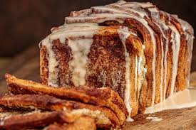

Cinnamon Roll Pull-apart Toast

Descrizione:
Picture layers of fluffy French bread coated in a decadent cinnamon-sugar blend and topped with a luscious cream cheese glaze. It’s part cinnamon roll, part French toast, and 100% delicious. Whether you make it for breakfast, brunch, or an afternoon snack, this is the easiest baked masterpiece to ever come out of your oven.
Ingredints:
- cooking spray
- 1/2 cup packed dark brown sugar
- 2 tablespoons ground cinnamon
- 1/4 teaspoon kosher salt
- 2 (11 ounce) cans original French bread dough (such as Pillsbury)
- 1/4 cup unsalted butter, melted and cooled slightly
- 3 ounce cream cheese, softened
- 3/4 cup sifted powdered sugar
- 3 to 4 tablespoons whole milk or half-and-half
- 3/4 teaspoon vanilla extract
- 1/4 teaspoon kosher salt
Steps:
- Prepare the bread
- Cut dough sheet into 12 even rectangles (about 3- x 3 1/2 inches)
- Stack dough rectangles on top of each other. Carefully transfer stack to prepared pan with rectangles standing upright (like dominoes)
- Transfer loaf pan to the preheated oven and bake until puffed and golden, 40 to 45 minutes, tenting with foil after 30 minutes. Remove from oven and let cool in the pan for 5 minutes
- While loaf cools, prepare the Glaze.
- Drizzle desired amount of the glaze over warm or room temperature bread.
- Serve with remaining glaze on the side.